CODING AGENTS AS PIXEL WORLD MODELS
traex/DeepSeek-V4.1-Flash · instance_preservation_0004
点击播放 · 原生 RGB 像素
逐轮保存的候选
回放视频、检查图与代码变化。
每份候选均可单独播放。实际图片检查记录在下方工具轨迹中。
候选 01播放与检查图
点击播放 · 原生 RGB 像素

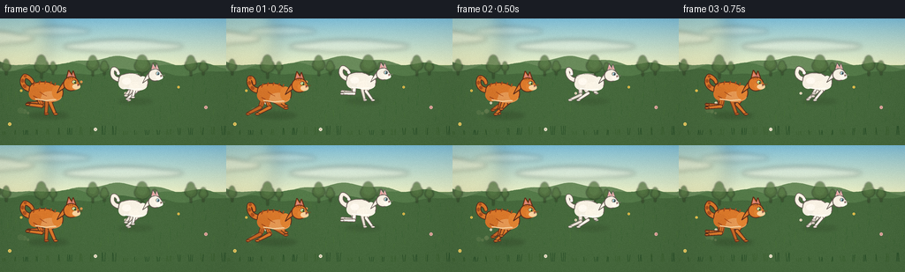
展开代码变化
--- 上一保存版本
+++ 本次保存版本
@@ -0,0 +1,579 @@
+"""Procedural text-to-video renderer for: two cats running through a meadow."""
+
+from __future__ import annotations
+
+import math
+from pathlib import Path
+
+import numpy as np
+from PIL import Image, ImageDraw, ImageFilter
+
+import artifact_io
+
+
+WIDTH = 256
+HEIGHT = 144
+FRAMES = 20
+FPS = 4.0
+SUPERSAMPLE = 4
+
+
+def rgb(value: str) -> tuple[int, int, int]:
+ value = value.lstrip("#")
+ return tuple(int(value[i : i + 2], 16) for i in (0, 2, 4))
+
+
+def mix(a, b, amount: float):
+ return tuple(round(a[i] * (1.0 - amount) + b[i] * amount) for i in range(3))
+
+
+def smoothstep(x: float) -> float:
+ x = max(0.0, min(1.0, x))
+ return x * x * (3.0 - 2.0 * x)
+
+
+def bezier_points(control, samples=28):
+ """Sample one or more connected cubic Bezier segments."""
+ result = []
+ for i in range(0, len(control) - 1, 3):
+ p0, p1, p2, p3 = control[i : i + 4]
+ for step in range(samples):
+ t = step / samples
+ u = 1.0 - t
+ result.append(
+ (
+ u**3 * p0[0] + 3 * u * u * t * p1[0] + 3 * u * t * t * p2[0] + t**3 * p3[0],
+ u**3 * p0[1] + 3 * u * u * t * p1[1] + 3 * u * t * t * p2[1] + t**3 * p3[1],
+ )
+ )
+ result.append(control[-1])
+ return result
+
+
+def solve_two_bone(joint, foot, upper, lower, bend):
+ """Simple planar IK, returning a knee/elbow between fixed joint and foot."""
+ jx, jy = joint
+ fx, fy = foot
+ dx, dy = fx - jx, fy - jy
+ distance = max(0.01, math.hypot(dx, dy))
+ distance = min(distance, upper + lower - 0.01)
+ ux, uy = dx / max(distance, 1e-6), dy / max(distance, 1e-6)
+ along = (upper * upper - lower * lower + distance * distance) / (2.0 * distance)
+ height = math.sqrt(max(0.0, upper * upper - along * along))
+ px, py = -uy, ux
+ return (jx + ux * along + px * height * bend, jy + uy * along + py * height * bend)
+
+
+class CatRenderer:
+ def __init__(
+ self,
+ canvas: Image.Image,
+ anchor_x: float,
+ ground_y: float,
+ size: float,
+ phase: float,
+ palette: str,
+ ):
+ self.image = canvas
+ self.draw = ImageDraw.Draw(canvas)
+ self.ax = anchor_x
+ self.ground = ground_y
+ self.size = size
+ self.phase = phase % 1.0
+ self.palette = palette
+ self.bob = 1.25 * math.sin(self.phase * math.tau + 0.55)
+
+ if palette == "orange":
+ self.base = rgb("#d9792b")
+ self.light = rgb("#f4a64c")
+ self.dark = rgb("#9e471c")
+ self.outline = rgb("#5b2d1c")
+ self.belly = rgb("#f6d2a0")
+ self.eye = rgb("#9bc74d")
+ self.inner_ear = rgb("#d9867d")
+ self.stripe = rgb("#a84f1e")
+ else:
+ self.base = rgb("#f4f0e4")
+ self.light = rgb("#fffdf6")
+ self.dark = rgb("#cfc8bd")
+ self.outline = rgb("#655b55")
+ self.belly = rgb("#fffaf0")
+ self.eye = rgb("#79b9d1")
+ self.inner_ear = rgb("#e6a1a0")
+ self.stripe = rgb("#ded8cf")
+
+ def p(self, x: float, y: float):
+ return ((self.ax + self.size * x) * SUPERSAMPLE, (self.ground - self.size * y) * SUPERSAMPLE)
+
+ def points(self, values):
+ return [self.p(x, y) for x, y in values]
+
+ def ellipse(self, x, y, rx, ry, fill, outline=None, width=0.0):
+ box = (
+ (self.ax + self.size * (x - rx)) * SUPERSAMPLE,
+ (self.ground - self.size * (y + ry)) * SUPERSAMPLE,
+ (self.ax + self.size * (x + rx)) * SUPERSAMPLE,
+ (self.ground - self.size * (y - ry)) * SUPERSAMPLE,
+ )
+ self.draw.ellipse(
+ box,
+ fill=fill,
+ outline=outline,
+ width=max(1, round(width * self.size * SUPERSAMPLE)) if outline else 0,
+ )
+
+ def polygon(self, values, fill, outline=None, width=0.0):
+ pts = self.points(values)
+ self.draw.polygon(pts, fill=fill)
+ if outline:
+ self.draw.line(
+ pts + [pts[0]],
+ fill=outline,
+ width=max(1, round(width * self.size * SUPERSAMPLE)),
+ joint="curve",
+ )
+
+ def line(self, values, fill, width):
+ self.draw.line(
+ self.points(values),
+ fill=fill,
+ width=max(1, round(width * self.size * SUPERSAMPLE)),
+ joint="curve",
+ )
+
+ def capsule(self, p1, p2, w1, w2, fill, outline=None, outline_width=1.0):
+ if outline:
+ self._capsule_once(p1, p2, w1 + outline_width * 2, w2 + outline_width * 2, outline)
+ self._capsule_once(p1, p2, w1, w2, fill)
+
+ def _capsule_once(self, p1, p2, w1, w2, fill):
+ x1, y1 = p1
+ x2, y2 = p2
+ dx, dy = x2 - x1, y2 - y1
+ length = max(1e-6, math.hypot(dx, dy))
+ nx, ny = -dy / length, dx / length
+ pts = [
+ (x1 + nx * w1 * 0.5, y1 + ny * w1 * 0.5),
+ (x2 + nx * w2 * 0.5, y2 + ny * w2 * 0.5),
+ (x2 - nx * w2 * 0.5, y2 - ny * w2 * 0.5),
+ (x1 - nx * w1 * 0.5, y1 - ny * w1 * 0.5),
+ ]
+ self.draw.polygon(self.points(pts), fill=fill)
+ self.ellipse(x1, y1, w1 * 0.5, w1 * 0.5, fill)
+ self.ellipse(x2, y2, w2 * 0.5, w2 * 0.5, fill)
+
+ def tapered_path(self, values, widths, fill, outline=None):
+ pts = list(zip(values[:-1], values[1:]))
+ if outline:
+ for (a, b), (wa, wb) in zip(pts, zip(widths[:-1], widths[1:])):
+ self._capsule_once(a, b, wa + 2.2, wb + 2.2, outline)
+ for (a, b), (wa, wb) in zip(pts, zip(widths[:-1], widths[1:])):
+ self._capsule_once(a, b, wa, wb, fill)
+
+ def foot_target(self, joint_x, phase, front):
+ p = phase % 1.0
+ stance = 0.43
+ amplitude = 18.0 if front else 19.0
+ forward = 10.0 if front else 11.0
+ if p < stance:
+ u = p / stance
+ x = joint_x + forward - 2.0 * amplitude * u
+ y = 1.65 + 0.35 * math.sin(u * math.pi)
+ else:
+ u = (p - stance) / (1.0 - stance)
+ x = joint_x + forward - 2.0 * amplitude + 2.0 * amplitude * smoothstep(u)
+ y = 1.65 + (13.0 if front else 15.0) * math.sin(math.pi * u)
+ return x, y
+
+ def draw_leg(self, hip, phase, front, far):
+ foot = self.foot_target(hip[0], phase, front)
+ if far:
+ foot = (foot[0] - 2.0, foot[1] + 0.2)
+ upper = 13.2 if front else 15.2
+ lower = 18.0 if front else 20.0
+ bend = -1.0 if front else 1.0
+ if far:
+ bend *= 0.9
+ knee = solve_two_bone(hip, foot, upper, lower, bend)
+
+ if far:
+ fur = mix(self.base, self.dark, 0.34)
+ outline = mix(self.outline, self.dark, 0.18)
+ else:
+ fur = self.base if self.palette == "orange" else mix(self.base, self.light, 0.35)
+ outline = self.outline
+
+ self.capsule(hip, knee, 5.3, 3.8, fur, outline, 1.15)
+ self.capsule(knee, foot, 3.8, 2.45, fur, outline, 1.05)
+ self.ellipse(foot[0] + 0.8, foot[1] - 0.15, 3.35, 1.65, fur, outline, 0.8)
+
+ if self.palette == "orange" and not front:
+ self.line([(hip[0] - 0.6, hip[1] - 2.8), (knee[0] + 0.2, knee[1] + 1.0)], self.stripe, 1.35)
+ self.line([(hip[0] + 2.6, hip[1] - 3.4), (knee[0] + 3.2, knee[1] + 0.4)], self.stripe, 1.1)
+
+ def draw_tail(self):
+ sway = math.sin(self.phase * math.tau + 0.3)
+ lift = 1.5 * math.sin(self.phase * math.tau + 1.1)
+ control = [
+ (-26.0, 35.5 + self.bob),
+ (-36.0, 35.0 + self.bob),
+ (-43.0, 44.0 + self.bob + lift),
+ (-38.5 + sway * 2.5, 53.0 + self.bob + lift * 0.4),
+ (-35.0 + sway * 2.0, 54.5 + self.bob),
+ (-30.0 + sway * 4.5, 49.0 + self.bob),
+ (-30.0 + sway * 5.0, 45.5 + self.bob),
+ ]
+ curve = bezier_points(control, 18)
+ widths = [6.2 * (1.0 - 0.48 * i / (len(curve) - 1)) for i in range(len(curve))]
+ self.tapered_path(curve, widths, self.base, self.outline)
+ if self.palette == "orange":
+ for index in (7, 13, 19):
+ if index + 1 < len(curve):
+ a, b = curve[index], curve[index + 1]
+ self.capsule(a, b, widths[index] * 0.75, widths[index + 1] * 0.75, self.stripe)
+ else:
+ tip = curve[-1]
+ self.ellipse(tip[0], tip[1], 2.2, 2.0, self.light)
+
+ def draw_body(self):
+ top = 45.0 + self.bob
+ body_control = [
+ (10.0, 36.0 + self.bob),
+ (5.0, 47.0 + self.bob),
+ (-16.0, 48.0 + self.bob),
+ (-27.0, 41.5 + self.bob),
+ (-33.0, 35.0 + self.bob),
+ (-29.0, 25.0 + self.bob),
+ (-21.0, 22.0 + self.bob),
+ (-10.0, 18.0 + self.bob),
+ (9.0, 18.0 + self.bob),
+ (17.0, 26.0 + self.bob),
+ (20.0, 34.0 + self.bob),
+ (15.0, 40.0 + self.bob),
+ (10.0, 38.0 + self.bob),
+ ]
+ silhouette = bezier_points(body_control, 18)
+ self.polygon(silhouette, self.base, self.outline, 1.35)
+
+ # Soft underside and shoulder masses.
+ self.ellipse(1.0, 25.0 + self.bob, 15.0, 7.4, mix(self.base, self.belly, 0.35))
+ self.ellipse(9.5, 31.0 + self.bob, 7.2, 10.0, mix(self.base, self.light, 0.22))
+ self.ellipse(-21.0, 29.0 + self.bob, 9.0, 9.2, mix(self.base, self.dark, 0.08))
+ self.line(
+ [(-21.0, 22.0 + self.bob), (-7.0, 19.7 + self.bob), (8.0, 21.0 + self.bob)],
+ self.belly if self.palette == "orange" else self.light,
+ 2.0,
+ )
+
+ if self.palette == "orange":
+ stripes = [
+ [(-24.0, 40.0), (-21.5, 45.4)],
+ [(-16.0, 42.0), (-14.5, 47.1)],
+ [(-8.0, 42.8), (-6.2, 47.1)],
+ [(0.0, 42.5), (1.5, 46.2)],
+ [(6.0, 40.2), (7.2, 44.4)],
+ [(-24.0, 26.0), (-18.5, 23.0)],
+ ]
+ for stripe in stripes:
+ stripe = [(x, y + self.bob) for x, y in stripe]
+ self.line(stripe, self.stripe, 1.45)
+ self.line([(-15.0, 33.0), (-9.0, 29.0), (-5.0, 27.0)], self.stripe, 1.0)
+ else:
+ self.line([(-25.0, 42.0), (-12.0, 45.0), (1.0, 44.0)], self.stripe, 1.2)
+ self.ellipse(-17.0, 33.0 + self.bob, 7.0, 5.5, mix(self.base, self.light, 0.65))
+
+ def draw_head(self):
+ hx, hy = 29.0, 43.0 + self.bob
+ neck = [
+ (9.0, 30.0 + self.bob),
+ (19.0, 37.0 + self.bob),
+ (24.0, 49.0 + self.bob),
+ (17.0, 44.0 + self.bob),
+ (13.0, 38.0 + self.bob),
+ ]
+ self.polygon(neck, self.base, self.outline, 1.2)
+
+ # Ears sit behind the head so their bases are cleanly occluded.
+ far_ear = [(27.5, 50.0 + self.bob), (32.0, 61.5 + self.bob), (35.8, 51.0 + self.bob)]
+ near_ear = [(22.5, 50.5 + self.bob), (25.6, 62.3 + self.bob), (32.1, 52.1 + self.bob)]
+ self.polygon(far_ear, mix(self.base, self.dark, 0.18), self.outline, 1.1)
+ self.polygon(near_ear, self.base, self.outline, 1.1)
+ self.polygon(
+ [(24.2, 53.0 + self.bob), (25.7, 59.3 + self.bob), (29.4, 53.8 + self.bob)],
+ self.inner_ear,
+ )
+ self.polygon(
+ [(29.3, 52.5 + self.bob), (32.0, 58.7 + self.bob), (33.9, 52.4 + self.bob)],
+ mix(self.inner_ear, self.dark, 0.18),
+ )
+
+ self.ellipse(hx, hy, 11.0, 10.2, self.base, self.outline, 1.3)
+ self.ellipse(hx + 5.0, hy - 2.5, 7.3, 6.0, mix(self.base, self.light, 0.22))
+ self.ellipse(hx + 7.2, hy - 4.0, 5.6, 3.6, self.belly)
+
+ # Side-facing eye, with a dark rim and a bright catchlight.
+ self.ellipse(hx + 4.4, hy + 2.4, 3.35, 2.8, rgb("#f7e9c8"), self.outline, 0.55)
+ self.ellipse(hx + 5.0, hy + 2.3, 2.1, 2.35, self.eye)
+ self.ellipse(hx + 5.6, hy + 2.25, 0.75, 2.1, rgb("#27221f"))
+ self.ellipse(hx + 4.8, hy + 3.05, 0.55, 0.55, rgb("#ffffff"))
+
+ # Nose, muzzle, mouth and whiskers.
+ self.ellipse(hx + 10.0, hy - 1.2, 1.45, 1.15, rgb("#c97878"), self.outline, 0.35)
+ self.line([(hx + 10.0, hy - 1.8), (hx + 10.1, hy - 3.2)], self.outline, 0.45)
+ self.line([(hx + 10.0, hy - 1.9), (hx + 8.5, hy - 3.0)], self.outline, 0.42)
+ self.line([(hx + 10.0, hy - 1.9), (hx + 11.0, hy - 3.0)], self.outline, 0.42)
+ for offset, tilt in [(-1.5, -1.1), (-0.2, -0.25), (1.1, 0.7)]:
+ self.line(
+ [(hx + 9.5, hy - 0.5 + offset * 0.25), (hx + 16.0, hy - 0.3 + tilt)],
+ mix(self.outline, self.base, 0.28),
+ 0.34,
+ )
+ self.line([(hx + 9.8, hy - 1.3), (hx + 8.9, hy - 3.4)], self.outline, 0.4)
+
+ if self.palette == "orange":
+ for x in (24.8, 27.4, 30.0):
+ self.line([(x, hy + 8.8), (x + 0.6, hy + 6.4)], self.stripe, 1.1)
+ self.line([(hx + 1.0, hy + 7.8), (hx + 4.5, hy + 8.8)], self.stripe, 0.9)
+ else:
+ self.line([(hx - 1.0, hy + 8.6), (hx + 3.0, hy + 9.4)], self.stripe, 0.9)
+
+ def render(self):
+ # Far legs, tail, near legs, then the torso and head create a readable
+ # overlap order without visible internal seams.
+ self.draw_leg((6.0, 25.2 + self.bob), self.phase + 0.08, True, True)
+ self.draw_leg((-21.0, 26.0 + self.bob), self.phase + 0.56, False, True)
+ self.draw_tail()
+ self.draw_leg((10.0, 25.4 + self.bob), self.phase, True, False)
+ self.draw_leg((-17.0, 26.4 + self.bob), self.phase + 0.48, False, False)
+ self.draw_body()
+ self.draw_head()
+
+
+def make_sky_and_ground(frame_index: int, time_s: float):
+ scale = SUPERSAMPLE
+ h, w = HEIGHT * scale, WIDTH * scale
+ horizon = 53 * scale
+ top = np.array(rgb("#79bddb"), dtype=float)
+ bottom = np.array(rgb("#e8efc7"), dtype=float)
+ ramp = np.linspace(0.0, 1.0, horizon)[:, None, None] ** 0.82
+ sky = top[None, None, :] * (1.0 - ramp) + bottom[None, None, :] * ramp
+ sky = np.repeat(sky, w, axis=1).astype(np.uint8)
+
+ meadow_top = np.array(rgb("#8caf5e"), dtype=float)
+ meadow_bottom = np.array(rgb("#456f3b"), dtype=float)
+ rows = h - horizon
+ ramp2 = np.linspace(0.0, 1.0, rows)[:, None, None] ** 0.72
+ meadow = meadow_top[None, None, :] * (1.0 - ramp2) + meadow_bottom[None, None, :] * ramp2
+ meadow = np.repeat(meadow, w, axis=1).astype(np.uint8)
+
+ array = np.concatenate([sky, meadow], axis=0)
+ return Image.fromarray(array, "RGB")
+
+
+def draw_clouds(image: Image.Image, time_s: float):
+ scale = SUPERSAMPLE
+ overlay = Image.new("RGBA", image.size, (0, 0, 0, 0))
+ draw = ImageDraw.Draw(overlay)
+ clouds = [(34, 22, 42, 8, 0.9), (188, 31, 53, 7, 0.75), (113, 14, 30, 5, 0.55)]
+ for cx, cy, rx, ry, alpha in clouds:
+ x = (cx - time_s * 0.32) % (WIDTH + 100) - 50
+ for ox, oy, sx, sy, a in [
+ (0, 0, 1.0, 1.0, 0.55),
+ (-0.55, 0.1, 0.7, 0.7, 0.48),
+ (0.58, 0.1, 0.72, 0.68, 0.44),
+ (0.1, 0.32, 0.75, 0.58, 0.36),
+ ]:
+ box = [
+ (x + ox * rx - sx * rx) * scale,
+ (cy + oy * ry - sy * ry) * scale,
+ (x + ox * rx + sx * rx) * scale,
+ (cy + oy * ry + sy * ry) * scale,
+ ]
+ draw.ellipse(box, fill=(255, 252, 235, round(255 * alpha * a)))
+ overlay = overlay.filter(ImageFilter.GaussianBlur(2.4 * scale))
+ return Image.alpha_composite(image.convert("RGBA"), overlay).convert("RGB")
+
+
+def draw_landscape(image: Image.Image, time_s: float):
+ scale = SUPERSAMPLE
+ draw = ImageDraw.Draw(image, "RGBA")
+
+ # Warm light source and long, soft hills.
+ glow = Image.new("RGBA", image.size, (0, 0, 0, 0))
+ gd = ImageDraw.Draw(glow)
+ gd.ellipse(
+ [(-18 * scale), (-15 * scale), (58 * scale), (61 * scale)],
+ fill=(255, 238, 164, 58),
+ )
+ glow = glow.filter(ImageFilter.GaussianBlur(9 * scale))
+ image = Image.alpha_composite(image.convert("RGBA"), glow).convert("RGB")
+ draw = ImageDraw.Draw(image, "RGBA")
+
+ for layer, (base_y, color, amp, speed, freq) in enumerate(
+ [
+ (49, (104, 138, 91, 255), 5.0, 1.8, 0.035),
+ (55, (83, 122, 73, 255), 4.0, 3.0, 0.043),
+ (61, (69, 105, 61, 255), 3.0, 4.6, 0.052),
+ ]
+ ):
+ pts = [(0, HEIGHT * scale)]
+ for x in range(0, WIDTH + 3, 2):
+ world_x = x + time_s * speed * (layer + 1)
+ y = base_y + amp * math.sin(world_x * freq + layer * 1.7) + 1.5 * math.sin(world_x * 0.13)
+ pts.append((x * scale, y * scale))
+ pts.append((WIDTH * scale, HEIGHT * scale))
+ draw.polygon(pts, fill=color)
+
+ # Distant tree line with deliberately irregular crowns.
+ tree_layer = Image.new("RGBA", image.size, (0, 0, 0, 0))
+ td = ImageDraw.Draw(tree_layer)
+ trees = [
+ (8, 52, 7, 14), (21, 54, 5, 10), (61, 53, 8, 15), (74, 55, 4, 8),
+ (119, 52, 7, 13), (132, 55, 5, 9), (175, 53, 9, 15), (189, 56, 4, 8),
+ (230, 52, 7, 13), (244, 55, 5, 9),
+ ]
+ for x, y, rx, ry in trees:
+ sx = (x - time_s * 1.35) % (WIDTH + 28) - 14
+ td.rectangle(
+ [(sx - 0.9) * scale, (y + ry * 0.38) * scale, (sx + 0.9) * scale, (y + ry) * scale],
+ fill=(71, 91, 55, 205),
+ )
+ td.ellipse(
+ [(sx - rx) * scale, (y - ry * 0.45) * scale, (sx + rx) * scale, (y + ry * 0.55) * scale],
+ fill=(75, 105, 59, 205),
+ )
+ td.ellipse(
+ [(sx - rx * 0.7) * scale, (y - ry * 0.78) * scale, (sx + rx * 0.65) * scale, (y + ry * 0.25) * scale],
+ fill=(83, 116, 65, 190),
+ )
+ tree_layer = tree_layer.filter(ImageFilter.GaussianBlur(0.75 * scale))
+ image = Image.alpha_composite(image.convert("RGBA"), tree_layer).convert("RGB")
+
+ draw = ImageDraw.Draw(image, "RGBA")
+ # Mid-ground grasses and wildflowers.
+ rng = np.random.default_rng(1907)
+ for i in range(96):
+ base_x = (i * 17.3 + rng.uniform(-4, 4) - time_s * 4.4) % (WIDTH + 16) - 8
+ y = 68 + (i * 37 % 50)
+ height = 3.2 + (i % 5) * 1.0
+ lean = 1.0 * math.sin(i * 1.9 + time_s * 2.0)
+ color = (47, 94, 44, 150) if i % 3 else (75, 118, 50, 135)
+ draw.line(
+ [(base_x * scale, y * scale), ((base_x + lean) * scale, (y - height) * scale)],
+ fill=color,
+ width=max(1, round(0.6 * scale)),
+ )
+
+ for i, (x, y, color) in enumerate(
+ [
+ (28, 82, (247, 208, 82)), (50, 96, (245, 233, 213)),
+ (96, 72, (242, 159, 84)), (146, 85, (245, 233, 213)),
+ (206, 78, (247, 208, 82)), (237, 101, (241, 177, 177)),
+ (15, 120, (249, 217, 104)), (112, 126, (247, 238, 221)),
+ ]
+ ):
+ sx = (x - time_s * 5.2) % (WIDTH + 8) - 4
+ radius = 1.4 if y < 100 else 1.8
+ draw.ellipse(
+ [(sx - radius) * scale, (y - radius) * scale, (sx + radius) * scale, (y + radius) * scale],
+ fill=color + (235,),
+ )
+ draw.ellipse(
+ [(sx - 0.35) * scale, (y - 0.35) * scale, (sx + 0.35) * scale, (y + 0.35) * scale],
+ fill=(150, 105, 45, 220),
+ )
+
+ # Foreground blades break the lower edge and reinforce the side-on motion.
+ for i in range(70):
+ x = (i * 23.1 - time_s * 7.0 + (i % 7) * 2.4) % (WIDTH + 18) - 9
+ y = 132 + (i * 13 % 13)
+ height = 4 + (i % 6) * 1.2
+ sway = 1.0 * math.sin(i * 1.4 + time_s * 3.1)
+ color = (33, 72, 36, 170) if i % 2 else (53, 91, 42, 150)
+ draw.line(
+ [(x * scale, y * scale), ((x + sway) * scale, (y - height) * scale)],
+ fill=color,
+ width=max(1, round(0.8 * scale)),
+ )
+
+ return image
+
+
+def draw_shadow(image: Image.Image, x: float, ground: float, size: float, alpha=55):
+ scale = SUPERSAMPLE
+ overlay = Image.new("RGBA", image.size, (0, 0, 0, 0))
+ draw = ImageDraw.Draw(overlay)
+ draw.ellipse(
+ [
+ (x - 30 * size) * scale,
+ (ground - 4.1 * size) * scale,
+ (x + 25 * size) * scale,
+ (ground + 4.6 * size) * scale,
+ ],
+ fill=(35, 47, 25, alpha),
+ )
+ overlay = overlay.filter(ImageFilter.GaussianBlur(2.0 * scale))
+ return Image.alpha_composite(image.convert("RGBA"), overlay).convert("RGB")
+
+
+def draw_dust(image: Image.Image, x: float, ground: float, phase: float, seed: int):
+ scale = SUPERSAMPLE
+ overlay = Image.new("RGBA", image.size, (0, 0, 0, 0))
+ draw = ImageDraw.Draw(overlay)
+ for i in range(3):
+ offset = (phase * 12.0 + i * 4.2 + seed * 1.3) % 13.0
+ px = x - 22 - offset
+ py = ground - 2.0 - i * 1.7 - 0.8 * math.sin(phase * math.tau + i)
+ radius = 1.2 + i * 0.65 + offset * 0.08
+ alpha = max(0, round(48 - offset * 2.5))
+ draw.ellipse(
+ [(px - radius) * scale, (py - radius) * scale, (px + radius) * scale, (py + radius) * scale],
+ fill=(222, 207, 154, alpha),
+ )
+ return Image.alpha_composite(image.convert("RGBA"), overlay).convert("RGB")
+
+
+def render_frame(frame_index: int):
+ time_s = frame_index / FPS
+ image = make_sky_and_ground(frame_index, time_s)
+ image = draw_clouds(image, time_s)
+ image = draw_landscape(image, time_s)
+
+ orange_x = 57.0 + frame_index * 2.25
+ white_x = 155.0 + frame_index * 2.05
+ orange_ground = 110.0
+ white_ground = 94.0
+ image = draw_shadow(image, orange_x, orange_ground, 0.81, 60)
+ image = draw_shadow(image, white_x, white_ground, 0.70, 45)
+
+ orange_phase = 0.16 + frame_index * 0.635
+ white_phase = 0.46 + frame_index * 0.635
+ image = draw_dust(image, orange_x, orange_ground, orange_phase, 1)
+
+ CatRenderer(image, white_x, white_ground, 0.70, white_phase, "white").render()
+ CatRenderer(image, orange_x, orange_ground, 0.81, orange_phase, "orange").render()
+
+ # Gentle warm grade, vignette and fine grain keep the low-resolution output
+ # from reading as flat vector art.
+ arr = np.asarray(image.resize((WIDTH, HEIGHT), Image.Resampling.LANCZOS), dtype=np.float32)
+ yy, xx = np.mgrid[0:HEIGHT, 0:WIDTH]
+ nx = (xx - WIDTH * 0.5) / (WIDTH * 0.5)
+ ny = (yy - HEIGHT * 0.5) / (HEIGHT * 0.5)
+ vignette = 1.0 - 0.075 * np.clip(nx * nx * 0.7 + ny * ny * 0.38, 0, 1)
+ arr *= vignette[:, :, None]
+ arr[:, :, 0] *= 1.018
+ arr[:, :, 1] *= 1.008
+ rng = np.random.default_rng(4000 + frame_index)
+ grain = rng.normal(0.0, 1.35, (HEIGHT, WIDTH, 1))
+ arr = np.clip(arr + grain, 0, 255).astype(np.uint8)
+ return arr
+
+
+def main():
+ frames = np.stack([render_frame(i) for i in range(FRAMES)])
+ artifact_io.save(frames, Path(__file__).resolve().parent)
+ print(f"Saved {len(frames)} frames at {WIDTH}x{HEIGHT}, {FPS:g} fps")
+
+
+if __name__ == "__main__":
+ main()
候选 02播放与检查图
点击播放 · 原生 RGB 像素

展开代码变化
--- 上一保存版本
+++ 本次保存版本
@@ -81,29 +81,33 @@
self.size = size
self.phase = phase % 1.0
self.palette = palette
- self.bob = 1.25 * math.sin(self.phase * math.tau + 0.55)
+ self.bob = 1.9 * math.sin(self.phase * math.tau + 0.55)
+ self.stretch = 0.034 * math.cos(self.phase * math.tau * 2.0)
if palette == "orange":
- self.base = rgb("#d9792b")
- self.light = rgb("#f4a64c")
- self.dark = rgb("#9e471c")
- self.outline = rgb("#5b2d1c")
- self.belly = rgb("#f6d2a0")
+ self.base = rgb("#cf7128")
+ self.light = rgb("#ef9d43")
+ self.dark = rgb("#944118")
+ self.outline = rgb("#48271c")
+ self.belly = rgb("#f0c58e")
self.eye = rgb("#9bc74d")
self.inner_ear = rgb("#d9867d")
- self.stripe = rgb("#a84f1e")
+ self.stripe = rgb("#984519")
else:
- self.base = rgb("#f4f0e4")
+ self.base = rgb("#f1eee3")
self.light = rgb("#fffdf6")
- self.dark = rgb("#cfc8bd")
- self.outline = rgb("#655b55")
+ self.dark = rgb("#c1bbb0")
+ self.outline = rgb("#453f3b")
self.belly = rgb("#fffaf0")
self.eye = rgb("#79b9d1")
self.inner_ear = rgb("#e6a1a0")
self.stripe = rgb("#ded8cf")
def p(self, x: float, y: float):
- return ((self.ax + self.size * x) * SUPERSAMPLE, (self.ground - self.size * y) * SUPERSAMPLE)
+ return (
+ (self.ax + self.size * x * (1.0 + self.stretch)) * SUPERSAMPLE,
+ (self.ground - self.size * y * (1.0 - self.stretch * 0.38)) * SUPERSAMPLE,
+ )
def points(self, values):
return [self.p(x, y) for x, y in values]
@@ -452,7 +456,7 @@
draw = ImageDraw.Draw(image, "RGBA")
# Mid-ground grasses and wildflowers.
rng = np.random.default_rng(1907)
- for i in range(96):
+ for i in range(64):
base_x = (i * 17.3 + rng.uniform(-4, 4) - time_s * 4.4) % (WIDTH + 16) - 8
y = 68 + (i * 37 % 50)
height = 3.2 + (i % 5) * 1.0
@@ -484,12 +488,12 @@
)
# Foreground blades break the lower edge and reinforce the side-on motion.
- for i in range(70):
+ for i in range(42):
x = (i * 23.1 - time_s * 7.0 + (i % 7) * 2.4) % (WIDTH + 18) - 9
y = 132 + (i * 13 % 13)
height = 4 + (i % 6) * 1.2
sway = 1.0 * math.sin(i * 1.4 + time_s * 3.1)
- color = (33, 72, 36, 170) if i % 2 else (53, 91, 42, 150)
+ color = (33, 72, 36, 135) if i % 2 else (53, 91, 42, 115)
draw.line(
[(x * scale, y * scale), ((x + sway) * scale, (y - height) * scale)],
fill=color,
@@ -539,19 +543,19 @@
image = draw_clouds(image, time_s)
image = draw_landscape(image, time_s)
- orange_x = 57.0 + frame_index * 2.25
- white_x = 155.0 + frame_index * 2.05
- orange_ground = 110.0
- white_ground = 94.0
- image = draw_shadow(image, orange_x, orange_ground, 0.81, 60)
- image = draw_shadow(image, white_x, white_ground, 0.70, 45)
+ orange_x = 51.0 + frame_index * 2.45
+ white_x = 168.0 + frame_index * 1.85
+ orange_ground = 113.0
+ white_ground = 92.0
+ image = draw_shadow(image, orange_x, orange_ground, 1.02, 65)
+ image = draw_shadow(image, white_x, white_ground, 0.91, 48)
orange_phase = 0.16 + frame_index * 0.635
white_phase = 0.46 + frame_index * 0.635
image = draw_dust(image, orange_x, orange_ground, orange_phase, 1)
- CatRenderer(image, white_x, white_ground, 0.70, white_phase, "white").render()
- CatRenderer(image, orange_x, orange_ground, 0.81, orange_phase, "orange").render()
+ CatRenderer(image, white_x, white_ground, 0.91, white_phase, "white").render()
+ CatRenderer(image, orange_x, orange_ground, 1.02, orange_phase, "orange").render()
# Gentle warm grade, vignette and fine grain keep the low-resolution output
# from reading as flat vector art.
候选 03播放与检查图
点击播放 · 原生 RGB 像素
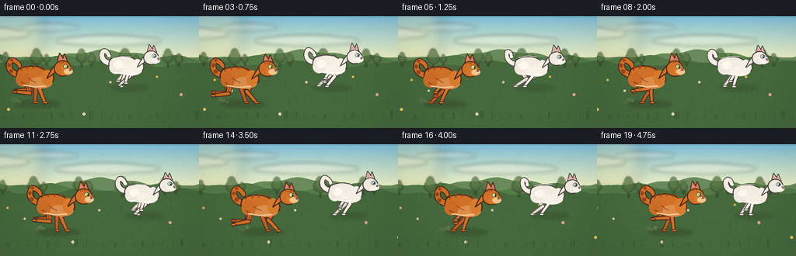
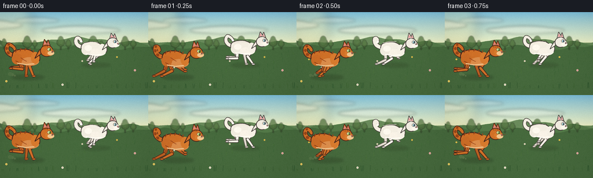
展开代码变化
--- 上一保存版本
+++ 本次保存版本
@@ -371,7 +371,7 @@
meadow = np.repeat(meadow, w, axis=1).astype(np.uint8)
array = np.concatenate([sky, meadow], axis=0)
- return Image.fromarray(array, "RGB")
+ return Image.fromarray(array)
def draw_clouds(image: Image.Image, time_s: float):
可观测工具轨迹
实际执行的命令与返回图片。
命令 1exit 0
/bin/bash -c "pwd && rg --files -g 'prompt.txt' -g 'GENERATION_RULES.md' -g 'task_spec.json' -g '"'!node_modules'"'"
命令 2exit 0
/bin/bash -c 'git status --short'
命令 3exit 0
/bin/bash -c 'cat prompt.txt'
命令 4exit 0
/bin/bash -c 'cat GENERATION_RULES.md'
命令 5exit 0
/bin/bash -c 'cat task_spec.json'
命令 6exit 0
/bin/bash -c "rg --files -g '*.py' -g '"'!generate.py'"' | head -50"
命令 7exit 0
/bin/bash -c 'find . -maxdepth 3 -type f | sort | head -100'
命令 8exit 0
/bin/bash -c "python - <<'PY' import importlib.util for name in ['artifact_io','numpy','PIL','imageio','cv2']: print(name, bool(importlib.util.find_spec(name))) PY"
命令 9exit 0
/bin/bash -c 'cat artifact_io.py'
命令 10exit 1
/bin/bash -c 'python generate.py'
命令 11exit 0
/bin/bash -c 'python generate.py'
命令 12exit 0
/bin/bash -c 'which magick || which convert || true'
命令 13exit 0
/bin/bash -c "python - <<'PY'
from PIL import Image
im=Image.open('frames/05.png')
im.resize((1024,576), Image.Resampling.NEAREST).save('.tmp/frame05_4x.png')
PY"命令 14exit 0
/bin/bash -c "python - <<'PY'
from PIL import Image
for n in [0,1,2,3,10,11,12,13]:
im=Image.open(f'frames/{n:02d}.png').resize((768,432), Image.Resampling.NEAREST)
im.save(f'.tmp/frame{n:02d}_3x.png')
PY"命令 15exit 0
/bin/bash -c 'mkdir -p .tmp/candidate_v1 && cp -r frames pixels.npz inspection.png transition_check.png index.html .tmp/candidate_v1/'
命令 16exit 0
/bin/bash -c 'python generate.py'
命令 17exit 0
/bin/bash -c "python - <<'PY'
from PIL import Image
for n in [0,3,5,7,10,14,19]:
im=Image.open(f'frames/{n:02d}.png').resize((1024,576), Image.Resampling.NEAREST)
im.save(f'.tmp/v2_{n:02d}.png')
PY"命令 18exit 0
/bin/bash -c "python - <<'PY'
import numpy as np
from pathlib import Path
p=np.load('pixels.npz')['pixels']
print('pixels', p.shape, p.dtype, 'range', int(p.min()), int(p.max()))
frames=sorted(Path('frames').glob('*.png'))
print('png frames', len(frames), frames[0].name, frames[-1].name)
prev=None
for i in range(p.shape[2]):
a=p[:,:,i]
if prev is not None:
print(f'{i-1:02d}->{i:02d} changed={np.count_nonzero(a"'!=prev):5d}'"')
prev=a
print('artifacts', [(x.name, x.stat().st_size) for x in [Path('pixels.npz'),Path('inspection.png'),Path('index.html')]])
PY"命令 19exit 0
/bin/bash -c 'python generate.py'
命令 20exit 0
/bin/bash -c "python - <<'PY'
import json, numpy as np
from pathlib import Path
from PIL import Image
spec=json.loads(Path('task_spec.json').read_text())
a=np.load('pixels.npz')['pixels']
assert a.shape == (spec['height'], spec['width'], spec['frames'])
assert a.dtype == np.uint32
imgs=[Image.open(p).convert('RGB') for p in sorted(Path('frames').glob('*.png'))]
assert len(imgs)==spec['frames'] and all(im.size==(spec['width'],spec['height']) for im in imgs)
assert len({im.tobytes() for im in imgs})==spec['frames']
print('validated:', len(imgs), 'unique RGB frames;', imgs[0].size, 'at', spec['fps'], 'fps')
PY"视觉工具实际返回图片 1
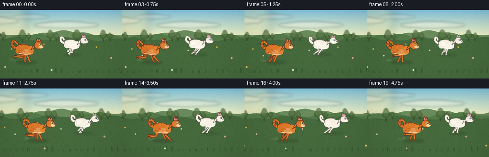
视觉工具实际返回图片 2
视觉工具实际返回图片 3
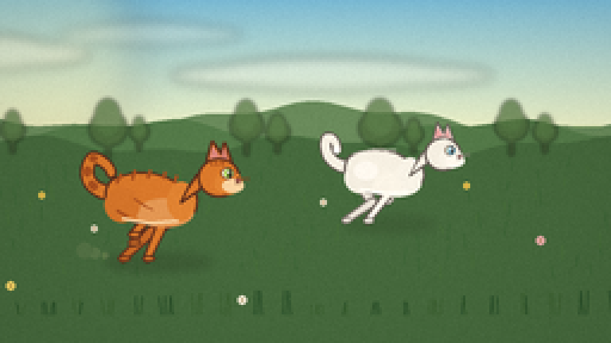
视觉工具实际返回图片 4
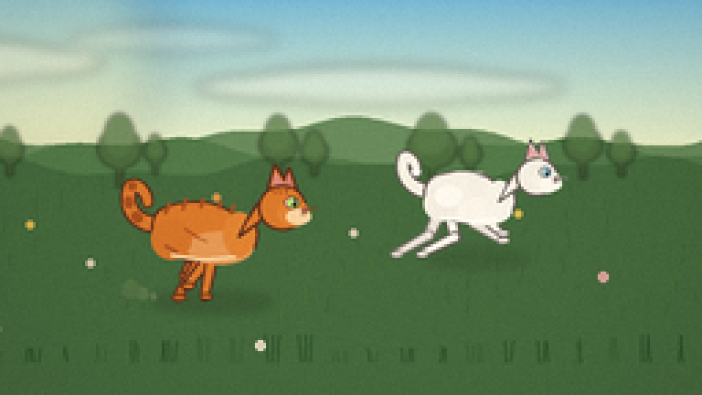
视觉工具实际返回图片 5
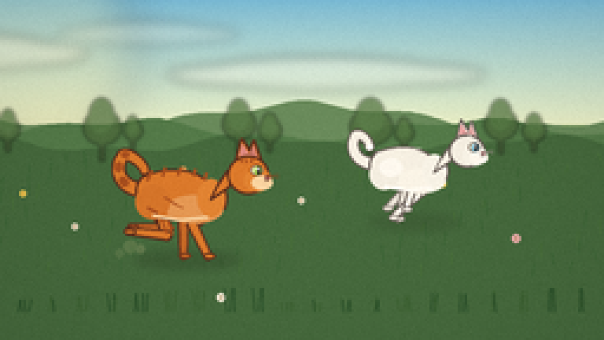
视觉工具实际返回图片 6
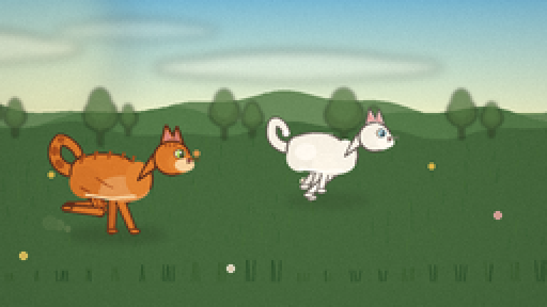
视觉工具实际返回图片 7

视觉工具实际返回图片 8
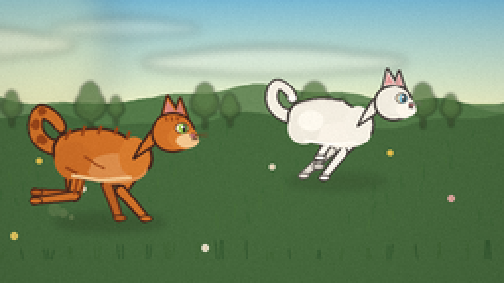
视觉工具实际返回图片 9
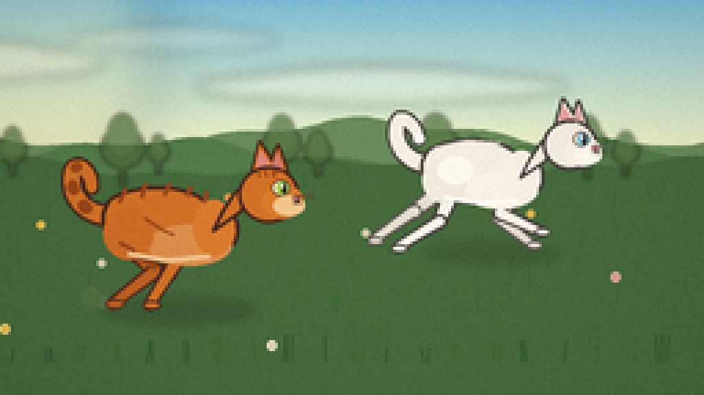
视觉工具实际返回图片 10
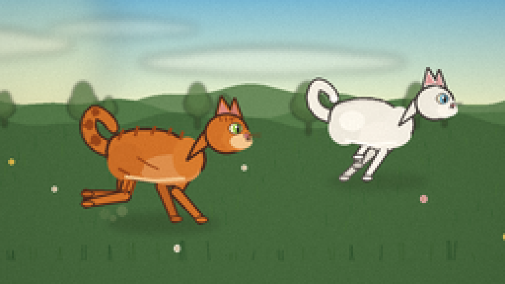
视觉工具实际返回图片 11
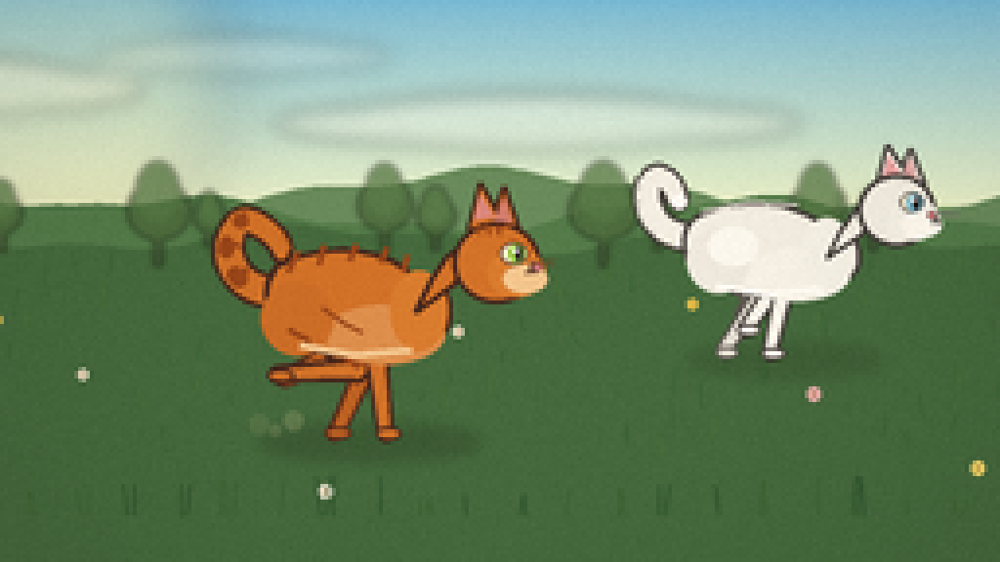
保存候选 3 份；完成命令 20 次；可验证图片返回 11 张。原始 API 响应与完整日志保留在本地。